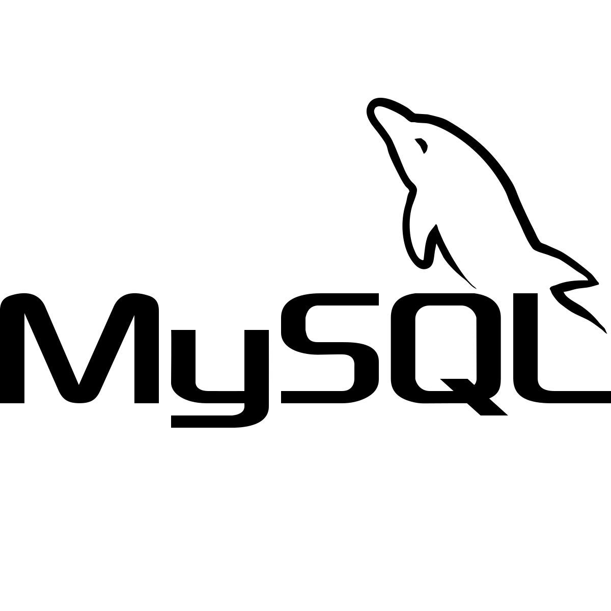

Tutorial de MySql para principiantes

MySql es un sistema de gestión de bases de datos relacional que se utiliza ampliamente en el desarrollo web. En el SENA lo vas a usar
para manejar la información de algunas bases de datos relacionales.
Contenido
1. Crear tu cuenta e iniciar sesión
Si todavía no tienes cuenta, primero debes crearla. Es gratis.
- Dentro de la consola de MySQL, ejecuta el siguiente comando para crear el usuario:.
- CREATE USER 'nombre_usuario'@'localhost' IDENTIFIED BY 'tu_contraseña';
- Para que el nuevo usuario pueda trabajar con las bases de datos, asígnale los privilegios necesarios:
- GRANT ALL PRIVILEGES ON *.* TO 'nombre_usuario'@'localhost' WITH GRANT OPTION;
- Aplicar los cambios de privilegios inmediatamente:
- FLUSH PRIVILEGES;
Para entrar las siguientes veces:
- Abre tu terminal o símbolo del sistema (cmd) y conéctate al servidor MySQL: mysql -u root -p
- Introduce la contraseña de administrador (root) cuando te la solicite
Importante: nunca compartas tu contraseña con nadie, ni siquiera con un compañero.
2. Crear una base de datos
Una base de datos es como un tabla de tu proyecto guardada en MySQL.
Normalmente se crea una por cada proyecto o taller.
- Abre MySQL Workbench e inicia sesión en tu servidor
- En la barra de herramientas superior, haz clic en el icono Create a new schema (representado como un cilindro de base de datos con un signo de más).
- Escribe el nombre para tu base de datos en el campo Schema Name.
- ESelecciona la codificación de caracteres por ejemplo, utf8mb4
- Haz clic en Apply
- Revisa el código SQL generado y haz clic nuevamente en Apply, y luego en Finish.
3. Exportar tus archivos
La forma más fácil, sin usar la terminal, es subirlos desde MySql Workbench.
- Abre MySQL Workbench y conéctate a tu servidor.
- En el panel de navegación lateral , selecciona «Data Export» Exportación de datos.
- Marca la casilla de la base de datos y las tablas que deseas exportar
- Elige si prefieres exportar a un archivo SQL independiente (Dump Project Folder o Self-Contained File).
- Selecciona la ruta de destino en tu computadora y haz clic en «Start Export»
Para aprender más
Revisa la documentación oficial de MySQL en español e inglés.
Volver arriba